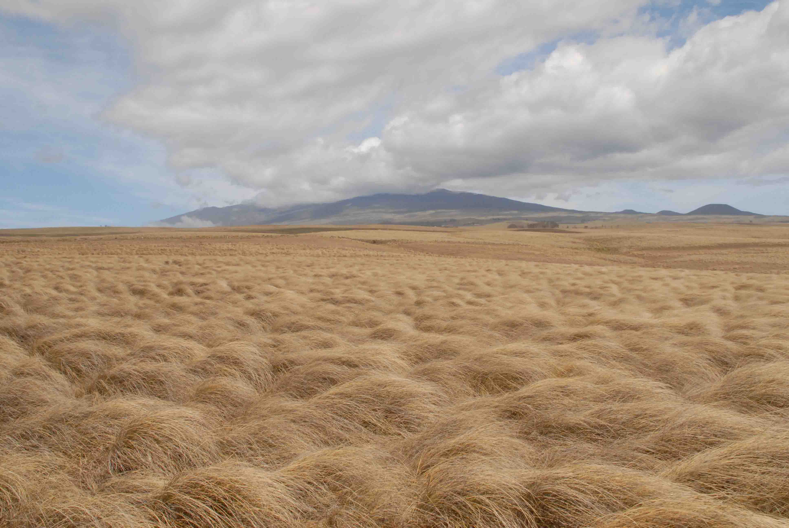

Bildformate im Web
Home
Es gitb verschiedene Bildformate. Browser beherschen jpg, png und gif.
jpg
jpg erzeugt die kleinsten Dateien, benutzt aber eine verlustbehaftet Kompresion die zu Artefakten führen. Je kleiner
die Dateigröße desto geringer die Qualität.
png
Verfügt über eine nicht so wirkungsvolle Kompression wie jpg - ist jedoch verlustfrei. Und png kann Transpatenz
gif
Ein von CompuServe entwickeltes Bildformat. Kennt nur 256 Farben - hat aber bis heute eine Bedeutung für "animated
gis".
mauna_kea01 ist ein jpg mit hoher Qualität

mauna_kea02 ist ein jpg mit niedriger Qualität

mauna_kea01 ist ein png mit hoher Qualität und

mauna_kea01.gif ist ein gif. gif dateien können max. 256 farben darstellen

Hier ist ein beispielgif

Hier ist ein png mit transparenz